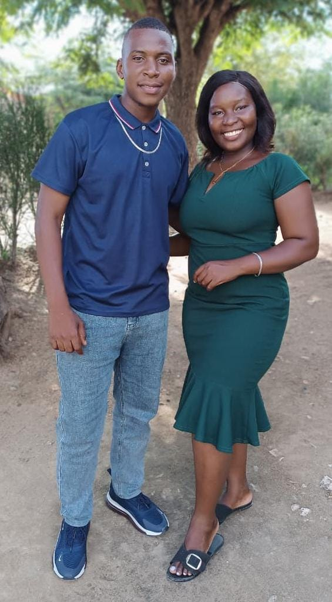

❦
❦
❦
❦

Suzalino & Ivete
"Dois corações, um só amor e uma vida inteira para partilhar."
O nosso amor escreveu uma história, agora queremos vivê-la para sempre.
Data do casamento
31 de Outubro de 2026
Cerimónia religiosa
Igreja Tabernáculo Aliança da Fé
Cerimónia civil
Cartorio de Tete
Recepção e jantar
Bairro Azul GPZ
Localização
Tete, Moçambique
Programa do Dia
Cerimónia Civil
10:00h
Cerimónia Religiosa
13:00h
Sessão de Fotografia
16:00h
Copo de Água
17:00h